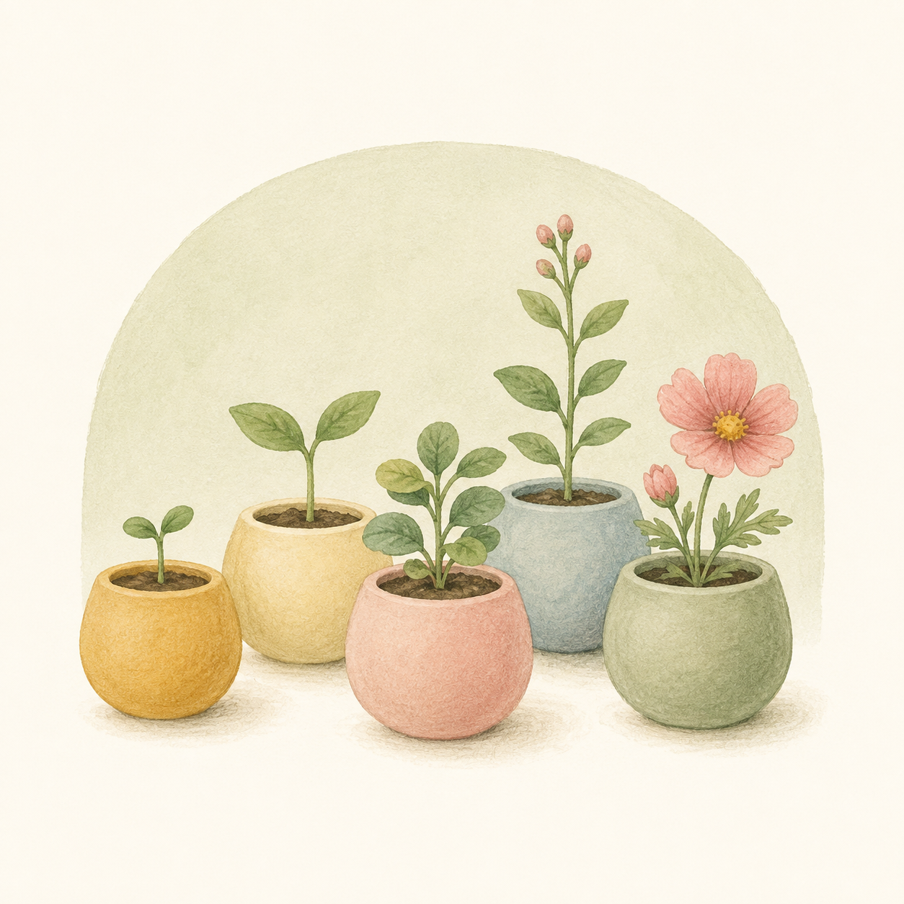

OUR CLASSES
クラス紹介
年齢に合わせた5つのクラスがあります

5 CLASSES
各クラスの紹介
子どもの生活は「遊び」であり、「遊び」は子どもにとって大切な仕事です
園全体の定員 合計 50名
きい組
0〜1歳児 — 乳児・3歳未満児
「子どもに安心感を与えることによって、ホッとして心が動く」。家庭的な雰囲気の中でやすらぎの場を作り、一人ひとりの生活リズムに合わせた保育を行います。歩くことが楽しくなってきたら、好奇心と意欲の芽生えを大切に、探索活動を通じて世界を広げていきます。
- 給食:
- 離乳食（6ヵ月から家庭と連携して進めます）／完全給食
- プログラム:
- リトミック（月1回）
きい組（ぷーさんチーム）
2歳児 — 3歳未満児
「自分の力加減、痛みがわかってくる」時期。身体の発達に伴って動いて体験する活動を行います。生活習慣の自立をゆっくり見守ります。
- 給食:
- 完全給食
- プログラム:
- リトミック（月1回）
もも組
3歳児 — 年少
「自己主張期」。ファンタジー能力が芽生え、すぐその気になれる時期。集団生活の喜びや楽しさを知らせ、仲間同士のかかわり合いの中で社会性を育みます。
- 目標:
- 集団生活の喜びや楽しさを知らせる
- プログラム:
- リトミック（月1回）、体育教室（月1回）
あお組
4歳児 — 年中
「何かしてあげたい気持ち旺盛」。自分から相手を意識し始める時期。本物をしっかり見つめ、感動する保育を実体験を通じて展開します。
- 目標:
- 本物をしっかり見つめ、感動する保育を展開する（実体験）
- プログラム:
- リトミック、体育教室、英語（週1回）、サッカー教室（月2回）
みどり組
5歳児 — 年長
「仲間の絆、つながりの中で思いやりの心が育つ」。「いのち」の大切さを実感を持って体験させます。草花のほかに食べられる植物を育て、命をいただくことによって心が育ちます。
- 目標:
- 就学に向けて、生活のルールを守る子どもに育てる
- プログラム:
- リトミック、体育教室、英語（週2回）、サッカー教室（月2回）
- 特別:
- 歯みがき後の毎日フッ素洗口（費用は園負担）
NEXT